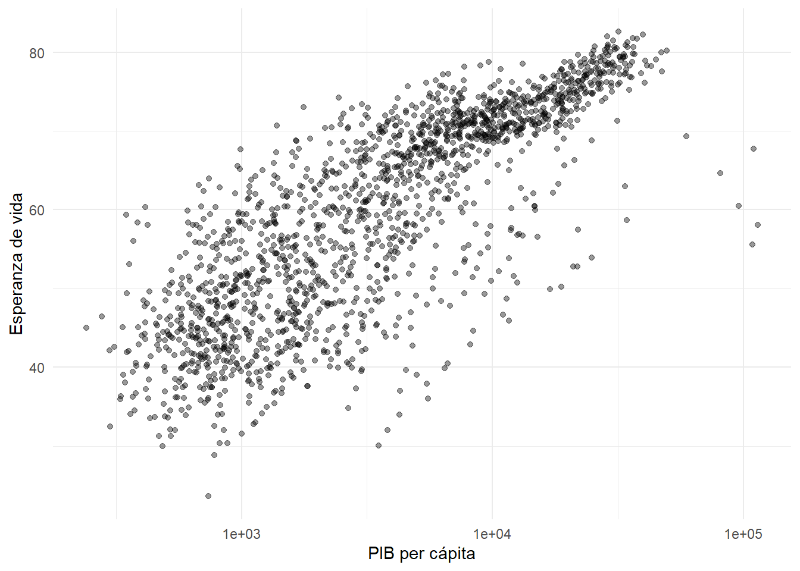
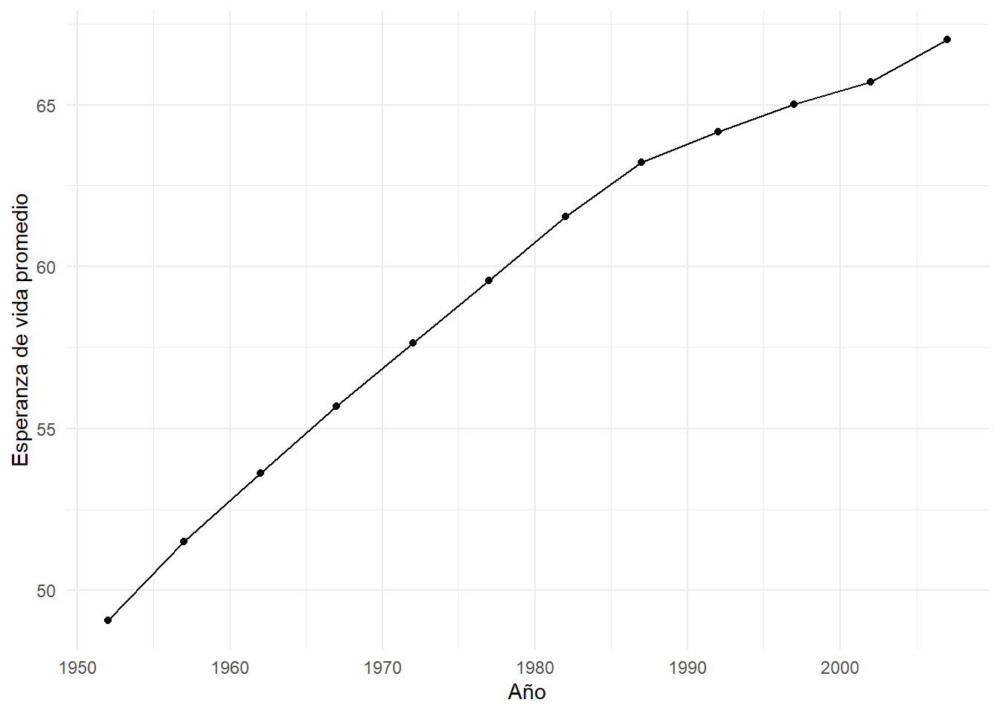

library(tidyverse)
library(gapminder)
library(knitr)38 Dashboards con Shiny y Quarto
38.1 Objetivos de aprendizaje
Al finalizar este capítulo, el lector será capaz de:
- Comprender qué es un dashboard interactivo.
- Diferenciar un informe reproducible de un dashboard.
- Preparar datos para un dashboard.
- Diseñar indicadores, gráficos y tablas.
- Construir una plantilla básica de Shiny en Quarto.
- Evitar errores de renderización en libros Quarto.
38.2 Introducción
Un dashboard es una herramienta visual que permite explorar información mediante filtros, indicadores, gráficos y tablas. Su propósito es facilitar el análisis y apoyar la toma de decisiones.
A diferencia de un informe tradicional, un dashboard permite interacción con los datos. Sin embargo, cuando se trabaja dentro de un libro Quarto que debe renderizar en HTML, PDF y Word, conviene separar dos elementos:
Capítulo del libro
=
explicación reproducible y estática
Dashboard Shiny
=
archivo independiente interactivoEsta separación evita errores de compilación y mantiene la reproducibilidad del proyecto (Allaire et al., 2024).
38.3 Configuración inicial
data(
"gapminder",
package = "gapminder"
)
datos_dashboard <- gapminder38.4 ¿Qué contiene un dashboard?
Un dashboard suele integrar cinco componentes:
tibble(
Componente = c(
"Filtros",
"Indicadores",
"Gráficos",
"Tablas",
"Conclusiones"
),
Funcion = c(
"Seleccionar información",
"Resumir datos clave",
"Visualizar patrones",
"Explorar registros",
"Apoyar decisiones"
)
) |>
kable(
caption = "Componentes básicos de un dashboard"
)| Componente | Funcion |
|---|---|
| Filtros | Seleccionar información |
| Indicadores | Resumir datos clave |
| Gráficos | Visualizar patrones |
| Tablas | Explorar registros |
| Conclusiones | Apoyar decisiones |
Interpretación
Un dashboard no debe ser una acumulación de gráficos. Debe organizar información útil para responder preguntas concretas.
38.5 Preparación de indicadores
datos_dashboard |>
group_by(
continent
) |>
summarise(
Esperanza_vida_promedio = mean(
lifeExp
),
PIB_promedio = mean(
gdpPercap
),
Poblacion_promedio = mean(
pop
),
.groups = "drop"
) |>
kable(
digits = 2,
caption = "Indicadores por continente"
)| continent | Esperanza_vida_promedio | PIB_promedio | Poblacion_promedio |
|---|---|---|---|
| Africa | 48.87 | 2193.75 | 9916003 |
| Americas | 64.66 | 7136.11 | 24504795 |
| Asia | 60.06 | 7902.15 | 77038722 |
| Europe | 71.90 | 14469.48 | 17169765 |
| Oceania | 74.33 | 18621.61 | 8874672 |
Interpretación
Los indicadores permiten comparar rápidamente el comportamiento promedio de cada continente.
38.6 Gráfico principal del dashboard
ggplot(
datos_dashboard,
aes(
x = gdpPercap,
y = lifeExp
)
) +
geom_point(
alpha = 0.4
) +
scale_x_log10() +
theme_minimal() +
labs(
x = "PIB per cápita",
y = "Esperanza de vida"
)
Interpretación
El gráfico muestra una relación positiva entre ingreso y esperanza de vida. La escala logarítmica facilita la lectura porque el PIB per cápita presenta alta dispersión.
38.7 Serie temporal
datos_dashboard |>
group_by(
year
) |>
summarise(
esperanza = mean(
lifeExp
),
.groups = "drop"
) |>
ggplot(
aes(
x = year,
y = esperanza
)
) +
geom_line() +
geom_point() +
theme_minimal() +
labs(
x = "Año",
y = "Esperanza de vida promedio"
)
Interpretación
La serie temporal permite observar la evolución general de la esperanza de vida a lo largo del tiempo.
38.8 Tabla para exploración
datos_dashboard |>
select(
country,
continent,
year,
lifeExp,
gdpPercap
) |>
slice_head(
n = 10
) |>
kable(
digits = 2,
caption = "Primeras observaciones para el dashboard"
)| country | continent | year | lifeExp | gdpPercap |
|---|---|---|---|---|
| Afghanistan | Asia | 1952 | 28.80 | 779.45 |
| Afghanistan | Asia | 1957 | 30.33 | 820.85 |
| Afghanistan | Asia | 1962 | 32.00 | 853.10 |
| Afghanistan | Asia | 1967 | 34.02 | 836.20 |
| Afghanistan | Asia | 1972 | 36.09 | 739.98 |
| Afghanistan | Asia | 1977 | 38.44 | 786.11 |
| Afghanistan | Asia | 1982 | 39.85 | 978.01 |
| Afghanistan | Asia | 1987 | 40.82 | 852.40 |
| Afghanistan | Asia | 1992 | 41.67 | 649.34 |
| Afghanistan | Asia | 1997 | 41.76 | 635.34 |
Interpretación
La tabla muestra la estructura mínima que podría incorporarse en un dashboard interactivo.
38.9 Estructura recomendada para un dashboard
Filtro principal
↓
Indicadores clave
↓
Gráfico principal
↓
Serie temporal
↓
Tabla de detalle38.10 Plantilla de dashboard Shiny en Quarto
El siguiente código debe guardarse como un archivo independiente, por ejemplo:
dashboard-gapminder.qmdNo debe ejecutarse dentro del libro completo si también se renderiza a PDF o Word.
# ---
# title: "Dashboard Gapminder"
# format:
# html:
# theme: cosmo
# server: shiny
# ---
library(shiny)
library(tidyverse)
library(gapminder)
library(plotly)
library(DT)
data(
"gapminder",
package = "gapminder"
)
datos_dashboard <- gapminder
selectInput(
inputId = "continente",
label = "Seleccione un continente:",
choices = unique(datos_dashboard$continent),
selected = "Europe"
)
datos_filtrados <- reactive({
datos_dashboard |>
filter(
continent == input$continente
)
})
renderText({
round(
mean(
datos_filtrados()$lifeExp
),
2
)
})
renderPlotly({
grafico <- ggplot(
datos_filtrados(),
aes(
x = gdpPercap,
y = lifeExp
)
) +
geom_point() +
scale_x_log10() +
theme_minimal()
ggplotly(
grafico
)
})
renderDT({
datatable(
datos_filtrados(),
options = list(
pageLength = 10
)
)
})Interpretación
Esta plantilla contiene los elementos mínimos de un dashboard Shiny: filtro, datos reactivos, indicador, gráfico interactivo y tabla dinámica.
38.11 ¿Por qué separar el dashboard del libro?
tibble(
Elemento = c(
"Libro Quarto",
"Dashboard Shiny"
),
Funcion = c(
"Explicar y documentar",
"Permitir interacción"
),
Formatos = c(
"HTML, PDF y Word",
"HTML interactivo"
)
) |>
kable(
caption = "Separación recomendada entre libro y dashboard"
)| Elemento | Funcion | Formatos |
|---|---|---|
| Libro Quarto | Explicar y documentar | HTML, PDF y Word |
| Dashboard Shiny | Permitir interacción | HTML interactivo |
Interpretación
La separación evita errores de renderización y permite que cada producto cumpla su función.
38.12 Publicación del dashboard
Para ejecutar el dashboard interactivo:
quarto::quarto_preview(
"dashboard-gapminder.qmd"
)Para generar el HTML:
quarto render dashboard-gapminder.qmd38.13 Errores frecuentes
tibble(
Error = c(
"Usar renderPlotly dentro de un libro PDF",
"No activar server: shiny",
"Poner ggplotly fuera de renderPlotly",
"Mezclar dashboard interactivo y libro completo"
),
Solucion = c(
"Dejar el código con eval: false",
"Agregar server: shiny en el archivo dashboard",
"Colocar ggplotly dentro de renderPlotly",
"Crear un archivo dashboard separado"
)
) |>
kable(
caption = "Errores frecuentes en dashboards Shiny"
)| Error | Solucion |
|---|---|
| Usar renderPlotly dentro de un libro PDF | Dejar el código con eval: false |
| No activar server: shiny | Agregar server: shiny en el archivo dashboard |
| Poner ggplotly fuera de renderPlotly | Colocar ggplotly dentro de renderPlotly |
| Mezclar dashboard interactivo y libro completo | Crear un archivo dashboard separado |
38.14 Lista de verificación
tibble(
Elemento = c(
"Capítulo estático renderiza",
"Dashboard separado",
"Filtros definidos",
"Datos reactivos",
"Gráficos interactivos",
"Tabla interactiva"
),
Estado = c(
"Sí",
"Sí",
"Sí",
"Sí",
"Sí",
"Sí"
)
) |>
kable(
caption = "Lista de verificación para dashboards"
)| Elemento | Estado |
|---|---|
| Capítulo estático renderiza | Sí |
| Dashboard separado | Sí |
| Filtros definidos | Sí |
| Datos reactivos | Sí |
| Gráficos interactivos | Sí |
| Tabla interactiva | Sí |
38.15 Manos a la obra
- Renderice este capítulo dentro del libro.
- Cree un archivo independiente llamado
dashboard-gapminder.qmd. - Active
server: shiny. - Copie la plantilla del dashboard.
- Ejecute el dashboard con
quarto_preview(). - Verifique que el filtro funcione.
- Revise el gráfico interactivo.
- Revise la tabla dinámica.
- Exporte el dashboard a HTML.
- Mantenga separado el dashboard del libro principal.
38.16 Resumen del capítulo
En este capítulo se presentó una forma robusta de trabajar con dashboards dentro de un proyecto Quarto. El libro debe contener la explicación, las tablas y los gráficos estáticos que renderizan correctamente en HTML, PDF y Word. El dashboard interactivo debe construirse como un archivo independiente con Shiny. Esta estrategia evita errores de compilación y permite cerrar el ciclo completo de investigación reproducible, desde el análisis hasta la comunicación interactiva de resultados.